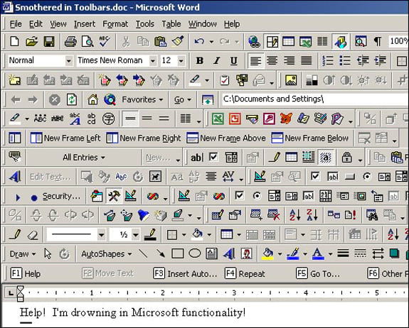

Last block gets removed (#27)
First block

Here are copy/paste test cases for the filters. They are not meant to showcase all types of HTML content that could be pasted into the editor, just the most common formats, as well as specific issues.
See also: Draft.js cut-copy-paste manual test plan.
Unstyled, strong, em, b, i,
strong em, code
Unstyled, u, s, sup, sub,
mark, q
, small
Unstyled, samp, ins, del,
kbd
Unstyled, anchor link, absolute link, relative link, full URL, mailto, javascript
Image:

After image
paragraph
blockquote
pre
pre codeFirst block
Body copy with strong, emphasis,
inline code, and link.
This blockquote helps validate conversion and filtering behavior.
| Element | Sample |
|---|---|
| Keyboard | Ctrl + V |
| Code | const filters = ["LINK"] |
Potentially unsafe URLs: javascript:, data:, vbscript:
<img src="x" onerror="alert('xss')" />
<svg onload="alert('xss')"></svg>
<script>alert('xss')</script>
<iframe srcdoc="<script>alert('xss')</script>"></iframe>
Suspicious CSS as text:
style="background-image:
url(javascript:alert('xss'))"